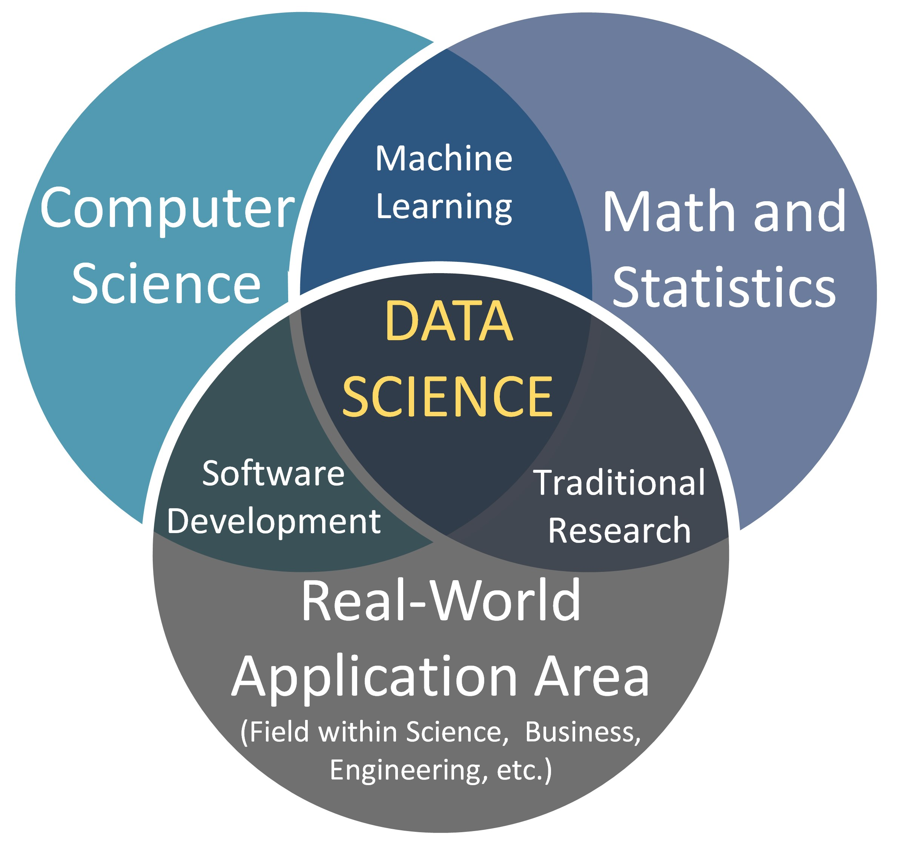
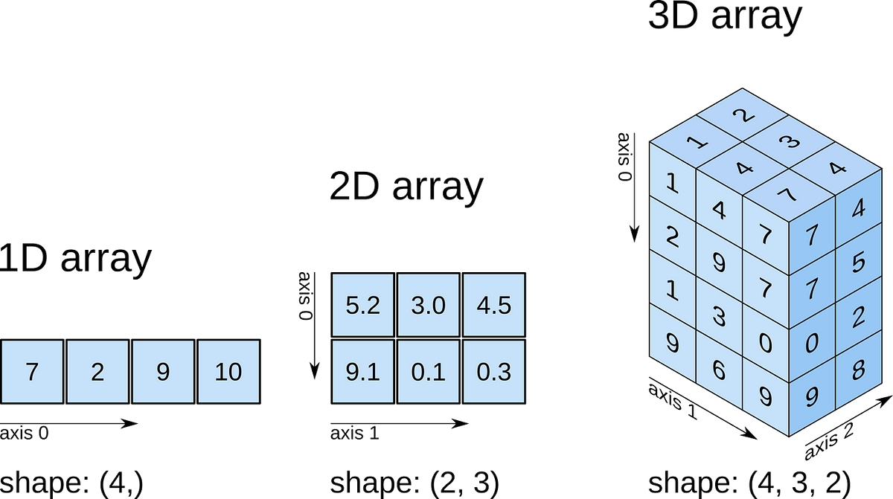
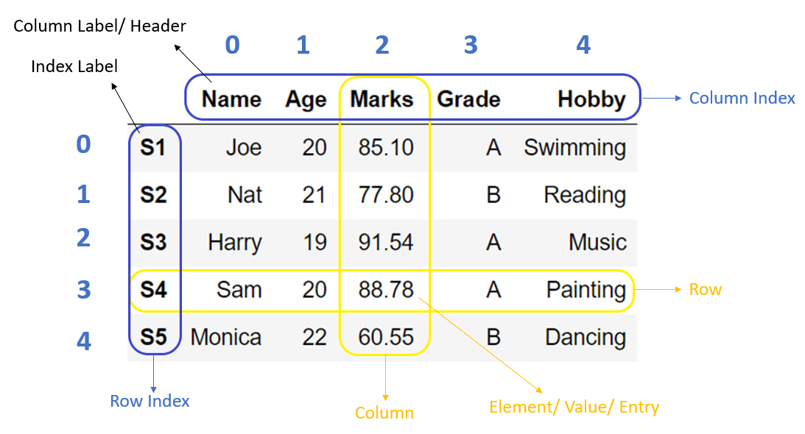
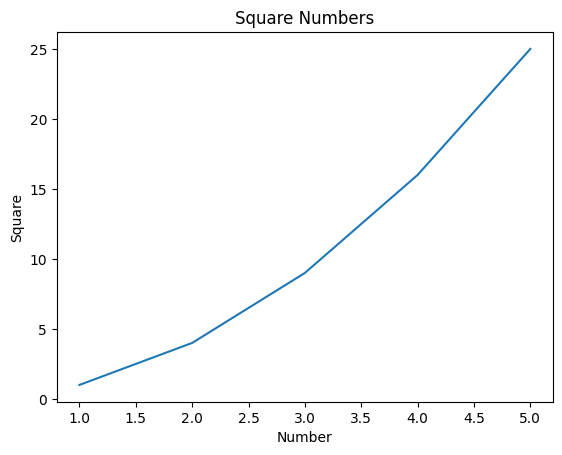

Keyboard shortcuts:
N/SpaceNext Slide
PPrevious Slide
OSlides Overview
ctrl+left clickZoom Element
If you want print version => add '
?print-pdf' at the end of slides URL (remove '#' fragment) and then print.
Like: https://progressbg-python-course.github.io/...CourseIntro.html?print-pdf
Data science basics. Working with Numpy, Pandas and Jupyter Notebooks
Created for
Iva E. Popova, 2016-2025,

Introduction
What is Data Science
- Data Science is an interdisciplinary field that combines statistics, computer science, and domain knowledge to extract meaningful insights from data.
{kind=link}

The Data Science Workflow (Simplified)
- Data Acquisition: Gathering data from various sources.
- Data Cleaning and Preprocessing: Handling missing values, errors, and transforming data into a usable format.
- Exploratory Data Analysis (EDA): Understanding the data through visualization and statistical summaries.
- Modeling and Algorithm Development: Building predictive or descriptive models using machine learning or statistical techniques.
- Evaluation and Interpretation: Assessing the performance of the model and drawing meaningful conclusions.
- Deployment and Communication: Applying the insights or deploying the model for practical use and communicating the findings to stakeholders.
Why Python for Data Science?
- Python has become the dominant programming language in the Data Science field due to several key advantages:
- Simplicity and Readability: Python's syntax is clear and easy to learn, making it accessible for beginners.
- Extensive Libraries: A vast ecosystem of powerful libraries specifically designed for data manipulation, analysis, visualization, and machine learning.
- Large and Active Community: This means ample resources, tutorials, and support are available.
- Integration Capabilities: Python can easily integrate with other tools and systems.
- Versatility: Beyond Data Science, Python is used in web development, automation, and more.
Core Python Libraries for Data Science
Core Python Libraries for Data Science
Overview
- NumPy for numerical computing
- Pandas for data manipulation
- Matplotlib & Seaborn for data visualization
- Scikit-learn for machine learning
- TensorFlow & PyTorch for deep learning
Setting Up the Environment
- Create and activate the virtual environment for your DataScience projects
- Install the necessary libraries using
- You can also use Jupyter Notebook for an interactive coding experience:
- Note, that VSCode supports working with Jupyter Notebooks: Jupyter Notebooks in VS Code
- Make sure you have installed the Jupyter extension from Microsoft.s
# Create
python -m venv .venv
# Activate (CMD)
.venv\Scripts\activate.bat
pip install numpy pandas matplotlib seaborn scikit-learn
pip install jupyterlab
NumPy (Numerical Python)
NumPy (Numerical Python)
Overview
- Provides support for large, multi-dimensional arrays and matrices, along with a collection of high-level mathematical functions to operate on these arrays.
- Foundation for many other scientific computing libraries.

Example
- Performing mathematical operations on arrays efficiently
import numpy as np
# Create a NumPy array
array = np.array([1, 2, 3, 4, 5])
print(array)
# Basic operations
print(array + 5) # Element-wise addition
print(array * 2) # Element-wise multiplication
# Multi-dimensional arrays
matrix = np.array([[1, 2, 3], [4, 5, 6], [7, 8, 9]])
print(matrix)
Resources
- NumPy Full Python Course - Data Science Fundamentals
Pandas
Pandas
Overview
- Offers powerful data structures for data analysis, primarily the DataFrame.
- Provides tools for data manipulation, cleaning, filtering, merging, and more.
- Makes working with tabular data (like spreadsheets or SQL tables) incredibly easy.

Example
import pandas as pd
# Create a DataFrame
data = {
'Name': ['Alice', 'Bob', 'Charlie', 'David'],
'Age': [25, 30, 35, 40],
'Department': ['HR', 'IT', 'Finance', 'Marketing']
}
df = pd.DataFrame(data)
print(df)
# Basic operations
print(df.describe()) # Statistical summary
print(df['Age'].mean()) # Mean of Age column
print(df[df['Age'] > 30]) # Filter rows where Age > 30
Data Handling with Pandas
- Examples are given in next Jupyter Notebook: Pandas_data_handling.ipynb
Resources
- Python Pandas Tutorial (Part 1): Getting Started with Data Analysis - Installation and Loading Data
Data Visualization
Data Visualization
Matplotlib
- A comprehensive library for creating static, interactive, and animated visualizations in Python.
- Provides a wide range of plot types (line plots, scatter plots, bar charts, histograms, etc.).
- Often used in conjunction with Pandas for visualizing data.
Example: Creating a simple line plot with Matplotlib
import matplotlib.pyplot as plt
# Simple line plot
x = [1, 2, 3, 4, 5]
y = [1, 4, 9, 16, 25]
plt.plot(x, y)
plt.title('Square Numbers')
plt.xlabel('Number')
plt.ylabel('Square')
plt.show()

Example: Plotting DataFrame with Matplotlib
- Examples are given in next Jupyter Notebook: Matplotlib_examples.ipynb
Resources
- Matplotlib Tutorial (Part 1): Creating and Customizing Our First Plots
These slides are based on
customised version of
framework